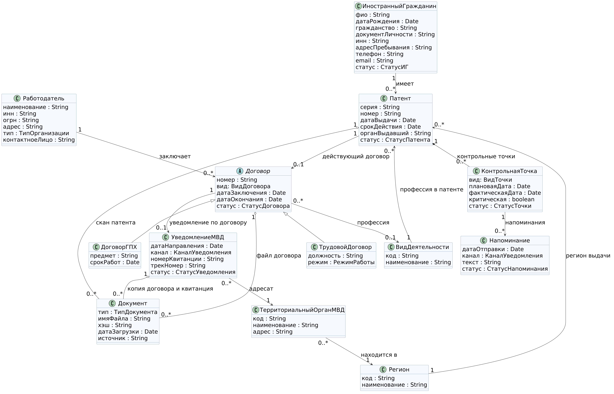

Книжка для защиты: четыре прецедента, восемь диаграмм последовательностей, десять операций, тринадцать классов модели, двадцать шесть классов проектирования, семьдесят восемь тестов.
Малышева Елена · Макеев Глеб
Полные материалы: github.com/mflkee/fms-course
1. Как этим пользоваться
Книжка — маршрут по защите, а не конспект всех диаграмм. Читать по порядку. В каждой лабораторной
есть врезка «Что сказать»: её надо пересказать своими словами, без бумажки.
Работа сквозная: шесть лабораторных, каждая отвечает на один вопрос, и каждая строится на предыдущей.
Поэтому если спросят, откуда в коде такой класс, ответ один: он появился на таком-то шаге из такой-то
обязанности.
Лаб.
Вопрос
Что получилось
1
Кто пользуется системой и что она обязана делать?
4 прецедента, 4 актора
2
Из каких понятий состоит тема и какие правила верны всегда?
13 классов, 7 инвариантов
3
Что система делает снаружи?
8 диаграмм последовательностей, 10 операций
4
Как операция выполняется внутри?
10 диаграмм коммуникаций
5
Какие классы и за что они отвечают?
26 классов проектирования
6
Работает ли это?
10 эндпоинтов, 78 тестов
Как читать диаграммы
Знак
Что значит
овал
прецедент — обязанность системы, а не экран и не кнопка
человечек
актор — роль человека или внешней системы
прямоугольник
класс (лаб. 2, 5) или участник сценария (лаб. 3, 4)
число на линии: 1, 0..*
кратность: сколько объектов участвует; «0..*» — может не быть ни одного
закрашенный ромб
композиция: часть не существует без целого (контрольные точки без патента)
сплошная стрелка / пунктир
вызов операции / возврат результата
Главная формулировка для ответа: «Каждый следующий шаг не переделывает предыдущий, а уточняет».
Если точного имени класса или метода не помнишь — открой файл и покажи. Оценивают понимание и трассировку,
а не память.
2. Рамки темы
Тема 7 дорожной карты — ровно два пункта. Всё остальное либо предусловие, либо чужая тема.
Входит в подсистему
Остаётся за её пределами
7.1 — трудоустройство: трудовой договор или договор ГПХ в течение 2 месяцев с даты выдачи патента. 7.2 — уведомление МВД о трудовой деятельности после заключения договора, не позднее 2 месяцев с даты выдачи патента.
Учёт выданного патента — вход подсистемы. Контроль сроков и напоминания — обслуживают оба пункта.
Предусловия (разделы 1–6): миграционный учёт, дактилоскопия, медицинское освидетельствование,
экзамен по русскому языку, заявление и выдача патента. Оплата (п. 6.1, НДФЛ) вносится до подачи заявления,
то есть до выдачи патента — это предусловие, а не действие после получения патента. Чужие темы (разделы 8–11): программа переселения, РВП, ВНЖ.
Жёсткие границы системы
Система не создаёт обращений, не регистрирует иностранного гражданина в МВД, не подаёт заявки, не отслеживает
статусы и ни с кем не интегрируется по API. Она ведёт учёт, считает сроки, напоминает исполнителю и хранит
доказательства отправки. Отсюда правило из замечаний преподавателя: «всё, что обещаем, — должны сделать».
Поэтому в модели нет ни одной операции, которой нет в системе.
Что сказать. «Тема 7 — это два пункта, 7.1 и 7.2. Оплата и выдача патента стоят до системы, разделы 8–11
— чужие темы. Система советует и учитывает, она не оформляет и не регистрирует».
3. Одна дата, два пункта
Два разных исполнителя и два разных действия — но один срок и одна точка отсчёта.
Пункт
Исполнитель
Обязанность
Срок
7.1
иностранный гражданин (А1)
заключить трудовой договор или договор ГПХ
в течение 2 месяцев с даты выдачи патента
7.2
работодатель / заказчик по ГПХ (А2)
уведомить МВД через ЕПГУ или почтой, приложив копию договора
после заключения договора, но не позднее 2 месяцев с даты выдачи патента
Что из этого следует. Дата выдачи патента — единственная точка отсчёта. Поздний ввод патента в систему
срок не сдвигает: патент выдан 1 марта, внесён 20 апреля — срок всё равно истекает 1 мая. «Два месяца» — календарные
месяцы с прижатием к концу месяца: 31 января плюс месяц — это 28 или 29 февраля. Правило записано один раз,
в классе контроля сроков.
Почему два основных исполнителя. В прецеденте П02 основной — гражданин (7.1), в П03 — работодатель (7.2).
Усреднённого актора нет: у каждого пункта свой исполнитель.
Главная фраза для защиты: «Пункты разные, исполнители разные, срок один. Поэтому срок считается от даты выдачи
и живёт в одном месте — в СервисСроков».
4. Лабораторные по порядку
Для каждой работы: что требовалось, что сделано, что сказать. Подробности — в разделах 5–8.
4.1. Лабораторная 1. Прецеденты
Требовалось. По тексту раздела 7 построить диаграмму прецедентов со спецификацией: кто исполняет,
что система обязана сделать, основной и альтернативные сценарии.
Сделано. Четыре прецедента: П01 «Учесть выданный патент» (вход подсистемы), П02 «Заключить трудовой
договор или договор ГПХ» (7.1), П03 «Уведомить МВД об осуществлении трудовой деятельности» (7.2), П04 «Контролировать
срок трудоустройства и напоминать» (контроль обоих сроков). Четыре актора: два основных — иностранный гражданин
и работодатель, два вспомогательных — сотрудник ОВМ МВД (адресат уведомления) и ЕПГУ / Почта России (канал).
Связей include и extend нет: прецеденты независимы, их связывают предусловия.
Рис. 1. Диаграмма прецедентов: два основных исполнителя, два вспомогательных актора, четыре прецедента.
Что сказать. «Прецедент — обязанность системы, которая даёт исполнителю результат. Основных исполнителей два,
потому что 7.1 адресован гражданину, а 7.2 — работодателю. МВД — адресат, а не исполнитель: решение по патенту
принимает ведомство, система его не запрашивает. П01 и П04 не выписаны в тексте пунктов, но без даты выдачи не
считается ни один срок, а контроль обслуживает оба пункта».
4.2. Лабораторная 2. Модель предметной области
Требовалось. Диаграмма классов предметной области: понятия темы и связи между ними, без поведения.
Сделано. 13 классов: одиннадцать самостоятельных (среди них абстрактный «Договор») и два его подкласса
(трудовой договор и договор ГПХ). Ядро — цепочка «гражданин → патент → договор → уведомление МВД», плюс контрольные
точки, напоминания и документы. Только атрибуты: без методов, без id и без модификаторов видимости. Семь инвариантов.
Что сказать. «Модель — понятия и правила, которые верны в любой момент. Семь инвариантов: из них выводятся
предусловия операций, проверки в сервисах и тесты. Регион и вид деятельности — классы описаний, справочники,
на которые ссылаются патенты и договоры. Методов, id и модификаторов видимости на этой диаграмме нет: обязанности
распределяются дальше, на лаб. 3–5».
4.3. Лабораторная 3. Системные операции
Требовалось. Описать систему снаружи: диаграммы последовательностей основного и существенных альтернативных
сценариев и спецификацию операций.
Сделано. Восемь диаграмм: по одной основной на прецедент и четыре существенные альтернативы. Десять
системных операций, у каждой контракт: параметры, результат, предусловия, постусловия.
Что сказать. «Диаграмм восемь, операций десять: диаграмма — это путь, операция — функция, и одна операция
попадает в несколько путей (операция 3 — в основной сценарий П02 и в отказ работодателя). Ключевые для защиты:
операция 1 — вход в подсистему, операция 4 — договор (7.1), операция 6 — уведомление (7.2), операция 9 — пересчёт сроков».
4.4. Лабораторная 4. Взаимодействие объектов
Требовалось. Для каждой системной функции из лаб. 3 показать, как внутренние объекты обмениваются сообщениями.
Сделано. Десять диаграмм коммуникаций, по одной на операцию. Объекты — только классы проектирования: экраны,
сервисы, сущности, репозитории, шлюзы. Акторы отдельными объектами не рисуются: их представляет граничный экран.
Что сказать. «Это тот же сценарий, что в лаб. 3, раскрытый внутрь. Запрос идёт по слоям: экран передаёт его
сервису, сервис проверяет сроки и инварианты, обращается к репозиторию или шлюзу. Ни один объект, кроме сервиса,
не решает, можно ли отправлять уведомление».
4.5. Лабораторная 5. Классы проектирования
Требовалось. Классы без привязки к языку программирования, согласованные с диаграммами коммуникаций.
Сделано. Схема BCE: граница — управление — сущности, плюс репозитории и шлюзы. Всего 26 классов: 4 экрана,
4 сервиса, 13 сущностей, 3 репозитория, 2 шлюза. У каждой из 10 операций ровно один метод-владелец.
Что сказать. «BCE описывает обязанности: экран показывает, сервис проверяет, сущность — понятие с атрибутами,
репозиторий сохраняет и находит, шлюз — заглушка канала (отправляет исполнитель). Зависимости идут только вниз. Двадцать шесть классов — это не
список для галочки: каждый участвует хотя бы в одной операции».
4.6. Лабораторная 6. Реализация
Требовалось. Реализовать программу, которая соответствует модели проектирования.
Сделано. Python 3.12 и FastAPI; слои и имена классов повторяют лабораторные 2–5. Десять операций — десять
эндпоинтов, 78 тестов, у каждого из семи инвариантов есть свой тест. Хранилища — в памяти, внешние системы — заглушки.
Что сказать. «Код повторяет модель, а не наоборот. Трассировка сквозная: прецедент → операция → класс → метод
→ эндпоинт → тест. Ограничения я назову сам: данные теряются при перезапуске, шлюзы — заглушки, аутентификации нет».
5. Модель предметной области
Понятия темы, связи и семь инвариантов. Только признаки реального мира: без методов, без id, без модификаторов.
5.1. Тринадцать классов
Группа
Класс
Атрибуты
ядро
ИностранныйГражданин
ФИО, дата рождения, гражданство, документ личности, ИНН, адрес пребывания, телефон, email, статус
ядро
Патент
серия, номер, дата выдачи, срок действия, орган, выдавший патент, статус
ядро
Работодатель
наименование, ИНН, ОГРН, адрес, тип (организация, ИП, заказчик ГПХ), контактное лицо
ядро
Договор (абстрактный)
номер, вид, дата заключения, дата окончания, статус
ядро
ТрудовойДоговор, ДоговорГПХ (подклассы)
должность, режим работы / предмет, срок работ
уведомление
УведомлениеМВД
дата направления, канал (ЕПГУ или почта), номер квитанции, трек-номер, копия договора, статус
уведомление
ТерриториальныйОрганМВД
код, наименование, адрес
сроки
КонтрольнаяТочка
вид, плановая дата, фактическая дата, критическая, статус
сроки
Напоминание
дата отправки, канал, текст, статус
вложения
Документ
тип, имя файла, хэш, дата загрузки, источник
описания
Регион
код, наименование
описания
ВидДеятельности
код, наименование, допустим для патента
Классы описаний. Регион и ВидДеятельность — не строки внутри патента, а самостоятельные классы с кодом и
наименованием. Это «классы описаний» из слайдов 39–40 курса: они описывают множество однотипных объектов, на которые
ссылаются другие. Патент действует только в своём регионе, профессия в патенте и договоре сверяется со справочником
(ИНВ-4). Без отдельных классов наименование региона и название профессии дублировались бы в каждом патенте и договоре.
5.2. Ядро и кратности
Рис. 2. Ядро модели: гражданин → патент → договор → уведомление. У каждой стрелки —
кратность; внизу памятка, как её читать. Полная модель из 13 классов — на следующей странице.
Гражданин может иметь несколько патентов (1 — 0..*), но действующий — один (ИНВ-5). На патент — не более одного
действующего договора (1 — 0..1). Работодатель заключает 0..* договоров; у каждого договора один работодатель.
Договор — абстрактный: трудовой и ГПХ различаются содержанием, но обязанность уведомить МВД одна. По договору — не
более одного уведомления. Уведомление направляется в конкретный территориальный орган МВД, а тот находится в одном регионе.
Полная модель предметной области — 13 классов (та же диаграмма, что в лабораторной 2)

5.3. Сроки и напоминания
Рис. 3. Патент — композиция контрольных точек (0..*). Точка — 0..* напоминаний за 14, 7 и 1 день до
плановой даты. Срок «заключить договор» — 2 месяца с даты выдачи патента.
Контрольные точки не существуют без патента (ИНВ-6). Кратность «0..*», а не «1..*»: набор может быть пустым, а
обязательность сроков задают инварианты, а не кратность. Напоминание — отдельный класс, потому что важен не только факт
предупреждения, но и дата, канал и статус доставки.
5.4. Семь инвариантов
ИНВ
Правило: всегда истинно
Откуда
ИНВ-1
на патент — не более одного действующего договора
п. 7.1
ИНВ-2
уведомление МВД — не раньше договора и не позднее 2 месяцев с даты выдачи патента
п. 7.2
ИНВ-3
договор заключён не позднее 2 месяцев с даты выдачи патента
п. 7.1
ИНВ-4
профессия по договору входит в перечень профессий, указанных в патенте
конструкция патента
ИНВ-5
у гражданина — не более одного действующего патента
конструкция патента
ИНВ-6
контрольные точки и напоминания не существуют без патента
целостность модели
ИНВ-7
смена работодателя требует нового уведомления МВД
п. 7.2
5.5. Что убрали и почему
Что убрали
Почему
суррогатные ключи (id) во всех классах
не элемент реального мира: «айдишник вы не назовёте» (замечание преподавателя). Технический ключ появится в реализации, лаб. 6
модификаторы видимости (-, +, #)
семантика реализации, а не анализа: на модели предметной области им не место
методы
модель содержит только атрибуты; обязанности распределяются в лаб. 3–5
платежи и суммы (оплата патента, п. 6.1)
предусловие темы, а не её содержание. В модели нет ни сумм, ни платежей, ни расчётов
учётные записи и входы
понятия реализации, а не предметной области темы 7
дата «не позднее» как хранимое поле
производная: считается из даты выдачи. Одно правило в одном месте, а не копия в каждом классе
Правило, которое проверяют: в модели нет ничего, чего нет в задании. Всё очевидное (ФИО, номер и срок патента)
— допустимо, всё остальное либо предусловие, либо чужая тема.
6. Сценарии и операции
Восемь диаграмм последовательностей, десять системных операций. Для каждой операции есть контракт.
6.1. Восемь сценариев
№
Прец.
Сценарий
Операции
01
П01
основной: регистрация патента, расчёт срока, контрольные точки
основной: работодатель проверяет патент → заключение договора
3, 4
04
П02
альтернатива: работодатель отказал, черновик договора отменён
3, 4, 5
05
П03
основной: уведомление через ЕПГУ, квитанция
6
06
П03
альтернатива: почта и возврат отправления
6, 7
07
П04
основной: пересчёт сроков, настройка напоминаний
8, 9
08
П04
альтернатива: срок истёк, фиксация нарушения
9, 10
6.2. Диаграммы последовательностей (рис. 4–7)
Система на этих диаграммах показана одной линией жизни. Проверки инвариантов записаны примечанием, потому что
их инициирует сама операция, а не актор.
Рис. 4. Операция 1 (П01): гражданин вносит патент, система создаёт карточку патента и контрольные точки;
срок считается от даты выдачи.Рис. 5. Операция 4 (п. 7.1): договор. Проверяются срок (ИНВ-3), профессия (ИНВ-4) и отсутствие другого
действующего договора (ИНВ-1).Рис. 6. Операция 6 (п. 7.2): работодатель направляет уведомление. Проверяется окно «не раньше договора
и не позднее 2 месяцев с даты выдачи» (ИНВ-2).Рис. 7. Операции 9 и 8 (П04): пересчёт сроков по дате выдачи и настройка напоминаний за 14, 7 и 1 день.
6.3. Десять операций
№
Операция
Прец.
Инварианты и примечание
1
зарегистрироватьПатент
П01
ИНВ-3, ИНВ-5, ИНВ-6
2
пометитьПатентАрхивным
П01
ИНВ-5, ИНВ-6
3
получитьСведенияОпатенте
П02
ИНВ-4, ИНВ-5; единственный запрос, состояние не меняет
4
заключитьДоговор
П02
ИНВ-1, ИНВ-3, ИНВ-4
5
отменитьДоговор
П02
ИНВ-1; только пока уведомление не направлено
6
направитьУведомлениеМВД
П03
ИНВ-2, ИНВ-7
7
зафиксироватьВозвратУведомления
П03
ИНВ-2
8
настроитьНапоминания
П04
ИНВ-6
9
пересчитатьСрокиПатента
П04
ИНВ-2, ИНВ-3, ИНВ-6
10
зафиксироватьНарушениеСрока
П04
ИНВ-2, ИНВ-3
6.4. Контракт операции 6
Параметры
идентификатор договора; канал (ЕПГУ или почта); подтверждение отправки — подпись и дата для ЕПГУ, либо дата отправки, трек-номер и опись для почты
Результат
сначала проект формы со сроком и остатком срока; после отправки — уведомление с каналом, номером квитанции или трек-номером, датой и статусом
Предусловия
договор заключён и зарегистрирован; патент учтён и действует; отправка не раньше договора и не позднее 2 месяцев с даты выдачи (ИНВ-2)
Постусловия
статус «направлено»; квитанция или трек-номер и опись сохранены; копия договора вложена; контрольная точка «направить уведомление» закрыта; договор переведён в статус «уведомление направлено»
Одна операция — одна диаграмма коммуникаций. Поэтому, если меняется операция, правится один контракт и одна
диаграмма, а не весь пакет. Как устроены коммуникации — в разделе 7.
7. Классы проектирования
Схема BCE: граница — управление — сущности, плюс хранилища и шлюзы. Двадцать шесть классов, и у каждой операции
один метод-владелец.
7.1. Слои
Граница — 4 экрана
ЭкранПатента · ЭкранДоговора · ЭкранУведомления · ЭкранСроков — по одному на прецедент; знают только управляющий слой
Правило срока живёт в одном месте — в СервисСроков. Регистрация патента обращается к нему за первым расчётом
срока и созданием контрольной точки, а не считает срок сам. Проверки инвариантов описаны в пояснениях, а не
отдельными методами: операция — один вызов.
7.3. Согласование с коммуникациями
Каждый объект диаграмм коммуникаций — класс из модели проектирования с тем же именем. Экран заменяет актора,
сервис владеет операцией, каждая запись идёт через репозиторий. Примеры — на рис. 9 и 10.
Рис. 9. Операция 1 «зарегистрировать патент»: экран → сервис → патент и контрольная точка →
репозиторий. Упрощённо.Рис. 10. Операция 6 «направить уведомление МВД»: договор читается из репозитория, уведомление уходит через
шлюз (здесь — ЕПГУ), квитанция сохраняется в уведомлении.
Почему BCE, а не слои «контроллер — сервис — DAO». BCE описывает обязанности («показать», «проверить»,
«сохранить»), а не структуру фреймворка. В нём нет ни языка, ни HTTP, ни таблиц: <<repository>>
— это обязанность «найти и сохранить», а не таблица в базе данных.
8. Реализация
Код повторяет модель: те же слои, те же имена, те же инварианты. Доказательство — 78 тестов и демо-сценарий.
8.1. Структура
lab6-implementation/
├── app/boundary/ экраны: роутеры и схемы запросов
├── app/control/ сервисы, invariants.py, сроки и напоминания
├── app/entity/ 13 классов модели
├── app/repository/ хранилища в памяти
├── app/gateway/ ЕПГУ и Почта (заглушки с режимом отказа)
└── tests/ 78 тестов
8.2. Десять эндпоинтов
№
Операция
HTTP
Метод сервиса
1
зарегистрироватьПатент
POST /patents
PatentService.register
2
пометитьПатентАрхивным
POST /patents/{id}/archive
PatentService.archive
3
получитьСведенияОпатенте
GET /patents/{id}
PatentService.get_details
4
заключитьДоговор
POST /contracts
ContractService.conclude
5
отменитьДоговор
POST /contracts/{id}/cancel
ContractService.cancel
6
направитьУведомлениеМВД
POST /notifications
NotificationService.send
7
зафиксироватьВозвратУведомления
POST /notifications/{id}/return
NotificationService.register_return
8
настроитьНапоминания
PUT /reminder-settings
ReminderService.configure
9
пересчитатьСрокиПатента
POST /patents/{id}/recalculate
DeadlineService.recalculate
10
зафиксироватьНарушениеСрока
POST /deadline-points/{id}/violation
DeadlineService.register_violation
Кроме них есть служебные чтения — справочники, карточки патента и договора, контрольные точки. Они нужны экранам
и демо, но операциями не являются.
8.3. Инварианты в коде
ИНВ
Что происходит при нарушении
ИНВ-1
второй действующий договор на патент — отказ 409 с указанием действующего договора
ИНВ-2
уведомление раньше договора — отказ 422. Позже срока — отказ 422 по умолчанию; с подтверждением allow_overdue=true отправка проходит, статус «просрочено»
ИНВ-3
договор позже срока не блокируется: регистрируется с признаком просрочки и предупреждением
ИНВ-4
профессия вне перечня патента — отказ 422 с перечнем профессий патента
точка или напоминание без патента — отказ 409; архивирование каскадно отменяет точки и напоминания
ИНВ-7
повторное уведомление по тому же договору — отказ 409; новый договор при смене работодателя требует нового уведомления
Проверки стоят в сервисах, а не в роутерах: тесты вызывают сервис напрямую, и правило действует при любом входе.
Срок считается по запросу, фонового расписания нет, поэтому состояние всегда выводится из данных.
8.4. Тесты и демо
Тесты. 78 тестов в pytest, по группам: патенты, договоры, уведомления, сроки, инварианты, шлюзы и служебные
маршруты. Тесты работают на неподвижных часах, поэтому сроки детерминированы: в коде нет обращения к «сегодня».
Линтер ruff проходит без замечаний.
Демо.scripts/demo.sh — 10 шагов, по одной операции. Запуск: сервер на порту 8099 и
BASE=http://127.0.0.1:8099 scripts/demo.sh; интерактивная документация — /docs. В демо видно
три вещи: просроченный срок фиксируется, а не блокируется; уведомление после срока требует явного подтверждения;
повтор уведомления по тому же договору получает отказ 409.
8.5. Ограничения
Назвать самому, до вопроса:
хранилища в памяти: данные теряются при перезапуске, работает один процесс;
шлюзы ЕПГУ и Почты — заглушки: реальных протоколов нет, электронная подпись не проверяется;
аутентификации нет: участники передаются идентификаторами;
файлы не хранятся: документ — это метаданные и хэш;
ИНН, ОГРН и серия патента не проверяются по формату; «2 месяца» — календарные месяцы, решение модели, а не норма закона.
9. Опасные вопросы
Десять вопросов, на которых проверяют мышление, а не память. Ответ — два-три предложения.
1. Почему моделируете только 7.1 и 7.2, а не всю дорожную карту?
Тема 7 — ровно два пункта. Разделы 1–6 — предусловия, разделы 8–11 — чужие темы. Задание требует полноты
реализации, а не широты: лучше полностью описать два пункта, чем расширять модель.
2. Где оплата по п. 6.1?
Она вносится до подачи заявления, то есть до выдачи патента. Это предусловие, а не действие после получения
патента. Если бы её моделировать, пришлось бы придумывать операции, которых в разделе 7 нет.
3. Почему прецедентов четыре, а не больше?
Четыре обязанности: учёт патента (вход), договор (7.1), уведомление (7.2), контроль сроков. Расширения вроде
прекращения договора или смены работодателя в разделе 7 не описаны. Придумать требование — значит пообещать
операцию, которой система не выполнит.
4. От какой даты считаются два месяца и почему не от ввода патента в систему?
От даты выдачи патента. Ввод с опозданием срок не сдвигает: система показывает остаток, а не начинает отсчёт заново.
Календарные месяцы с прижатием к концу месяца; правило записано в одном месте — СервисСроков.
5. Почему в модели нет id, методов и модификаторов видимости?
Это модель предметной области: только признаки реального мира. Id — технический ключ, он появляется
в реализации. Методы распределяются на лаб. 3–5, модификаторы видимости относятся к реализации, а не к анализу.
6. Зачем Регион и ВидДеятельности отдельными классами?
Это классы описаний (слайды 39–40): справочники, на которые ссылаются патенты и договоры. Наименование не
дублируется в каждом патенте, а ИНВ-4 проверяется именно по справочнику профессий.
7. Почему система не создаёт обращение и не отслеживает статус?
Потому что это границы: система ведёт учёт, считает сроки, напоминает и хранит доказательства. Если бы она
обещала записать в МВД или показывать ход рассмотрения, ей пришлось бы интегрироваться с ведомством, а этого нет.
Всё, что обещаем, — должны сделать, поэтому обещаем только учёт.
8. Почему ИНВ-2 блокирует уведомление, а ИНВ-3 лишь фиксирует опоздание договора?
Уведомление раньше договора юридически невозможно — это отказ. Позднее уведомление по умолчанию тоже отклоняется;
отправить его можно только с явным подтверждением, и тогда статус «просрочено». Договор, заключённый с опозданием,
— уже факт, учёт должен его отразить: система регистрирует его и помечает просрочку.
9. Почему восемь диаграмм последовательностей, а операций десять?
Диаграмма — путь (сценарий), операция — функция. Одна операция встречается в нескольких путях: операция 3 — в
основном сценарии П02 и в отказе работодателя. Операций десять: отдельная операция на каждое изменение состояния
и один запрос.
10. Почему инварианты в сервисах, а не в роутерах?
Роутер можно обойти: сервис вызывают тесты и любые будущие экраны. Правило рядом с моделью действует при любом
входе. Для каждого из семи инвариантов есть отдельный тест.
Если вопроса нет в списке — отвечай по тому же принципу: что система обязана сделать, откуда это следует
(пункт 7.1 или 7.2) и где это проверяется (класс, метод, тест). Если точного ответа нет: «Точно не помню — сейчас
открою и покажу». Это ответ инженера.
10. Чек-лист перед защитой
Рассказываю рамки за полминуты: тема 7, два пункта, предусловия (включая оплату, п. 6.1), чужие разделы
Называю 4 прецедента и 4 актора; два основных исполнителя — гражданин и работодатель
Объясняю один срок: дата выдачи + 2 месяца, и почему поздний ввод его не сдвигает
Объясняю классы описаний: Регион и ВидДеятельность; почему нет id, методов и модификаторов
Объясняю разницу: 8 диаграмм последовательностей (сценарии) и 10 операций (функции)
Провожу операцию 1 или 4 от прецедента до теста (пример ниже)
Говорю, что система не создаёт обращений, не регистрирует в МВД и сама ничего не отправляет
Называю ограничения: хранилища в памяти, заглушки шлюзов, нет аутентификации
Отвечаю на 10 вопросов из раздела 9 своими словами и показываю файл, если спросят имя
Сквозная трассировка на примере операции 4
П02 «Заключить договор» (п. 7.1) → операция 4 «заключитьДоговор» → диаграмма последовательностей 03 (рис. 5) →
диаграмма коммуникаций 04 → СервисДоговоров.заключитьДоговор() → POST /contracts →
тесты в test_contracts.py. Если можешь пройти такую цепочку по памяти для операции 1 и операции 4 —
этого хватает на уверенный ответ.
Порядок выступления на 8 минут
Время
Что сказать
Что показать
0:30
рамки: тема 7, два пункта, границы системы
раздел 2
1:00
прецеденты, четыре актора, два основных исполнителя